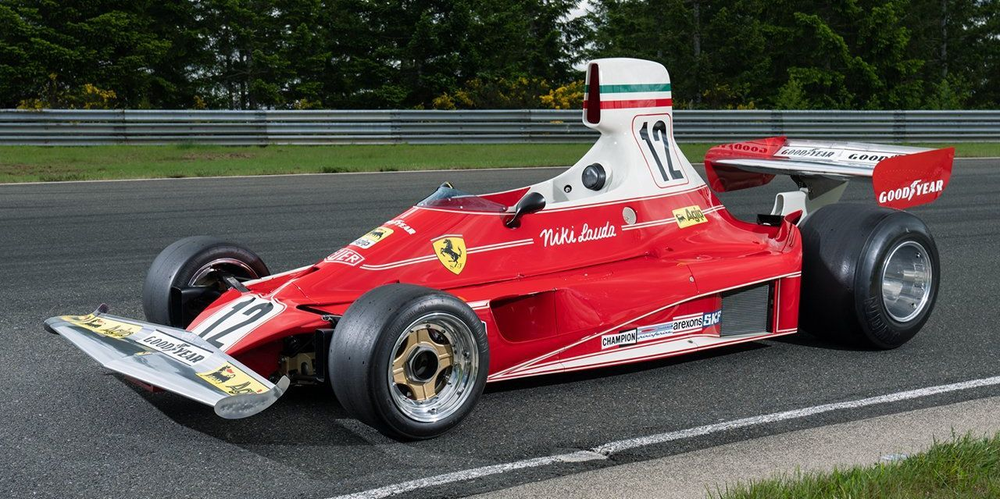
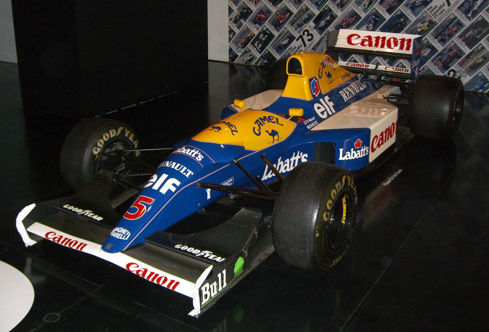
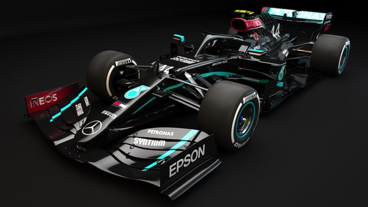

Ferrari 312T (1975)
Conducido por Niki Lauda, este Ferrari es uno de los monoplazas más legendarios, ganando múltiples campeonatos en los 70.

McLaren MP4/4 (1988)
El auto de Senna y Prost dominó la temporada 1988, con uno de los mejores diseños de todos los tiempos en la F1.

Williams FW14B (1992)
Este auto revolucionó la tecnología en la F1 con su suspensión activa, ayudando a Nigel Mansell a ganar el campeonato de 1992.

Mercedes W11 (2020)
Un diseño futurista y veloz que llevó a Lewis Hamilton a su séptimo campeonato, el Mercedes W11 dominó la era híbrida.